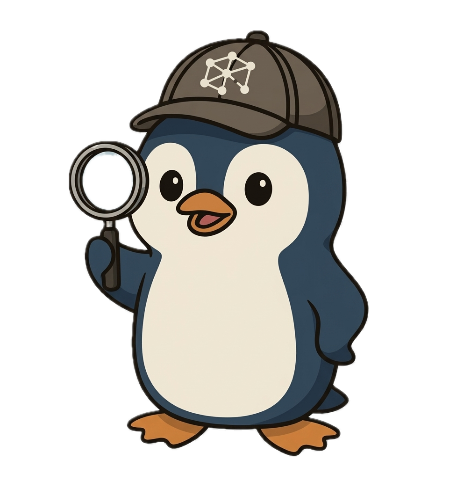

Network Investigation Suite
See Every
Hop. Every
Connection.
Ping. Trace. Map. Inspect.
Everything you need to understand
what's between you and anywhere.
Ping. Trace. Map. Inspect.
Everything you need to understand
what's between you and anywhere.
